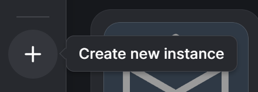
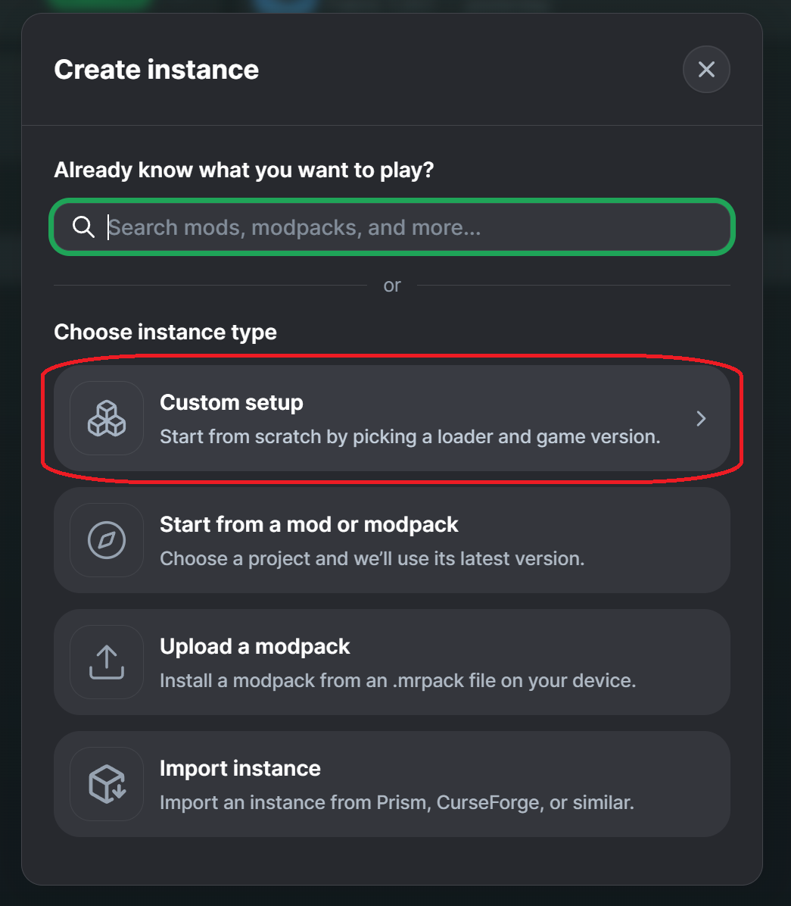
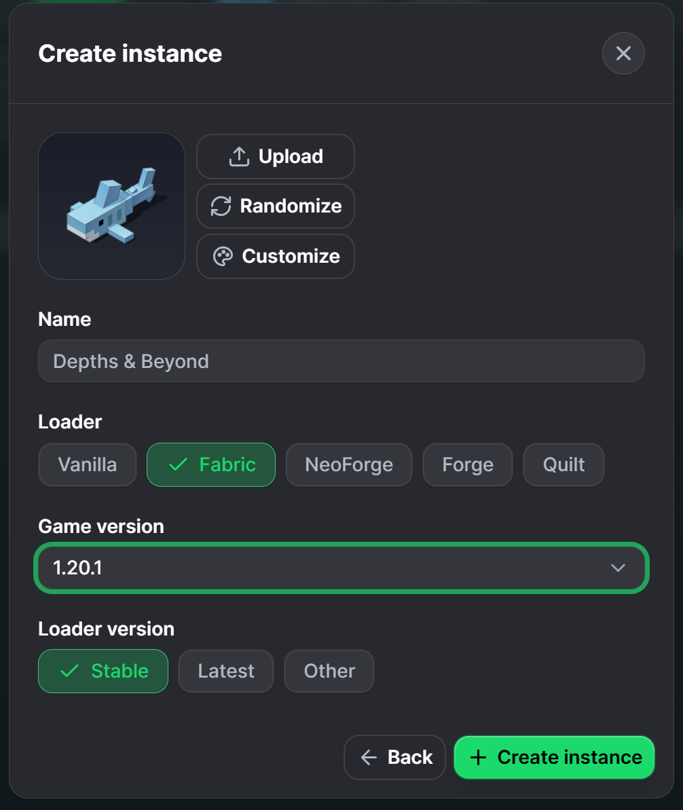
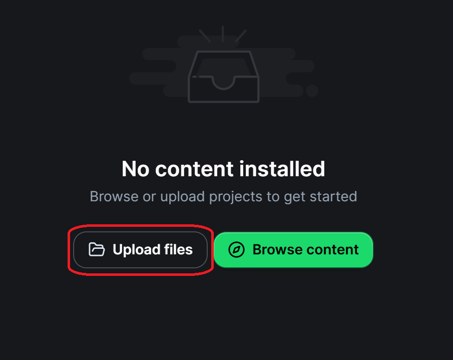
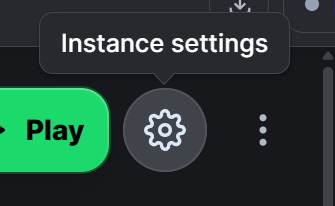
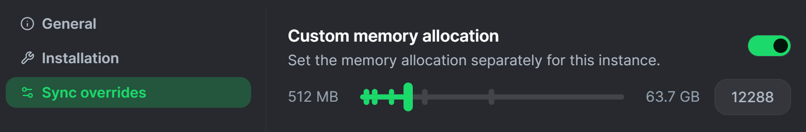
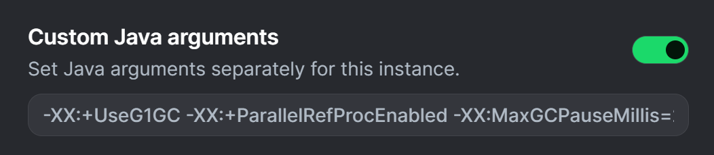

Video walkthrough
Prefer to watch instead?
Watch the below video for an interactive setup tutorial.
I haven't recorded a video yet. Proceed with the image guide below.
Step 1
Create a new Modrinth instance
Open the Modrinth App and click the + button on the left-hand side to create a new instance.

In the Create Instance window, choose Custom setup. This lets us select the exact Minecraft version and mod loader required by the server.

Step 2
Configure Minecraft 1.20.1 with Fabric
Give the instance a name such as Depths & Beyond, choose Fabric as the loader, and set the game version to 1.20.1.
For the loader version, use the latest stable revision available for Minecraft 1.20.1. Once everything matches, click Create instance and wait for Modrinth to finish installing the base game and Fabric loader.

Step 3
Upload the Depths & Beyond mod files
After the instance has finished installing, open it in Modrinth. On a new instance you should see a No content installed screen.
The Depths & Beyond download will be supplied as a .zip archive. Extract that archive somewhere easy to find, then click Upload files in Modrinth and select the individual .jar files from inside it. You can select all of the mod JARs at once.
.zip itself in the mods folder, and do not create an extra folder inside mods. The individual .jar files must sit directly inside the instance's mods folder.
Step 4
Allocate more memory
Depths & Beyond is considerably heavier than vanilla Minecraft, so the instance needs more memory than Modrinth normally allocates by default.
Open the instance and click the gear icon next to the Play button to enter Instance settings.

Enable Custom memory allocation and increase the amount of RAM available to the instance. Depths & Beyond requires a minimum of 6 GB / 6144 MB. For most players, we recommend 8 GB / 8192 MB if your computer has enough system memory available.
Avoid allocating all of your system RAM to Minecraft. If your PC only has 8 GB of RAM in total, the modpack may struggle to run comfortably alongside Windows and other applications.

Step 5
Set the custom JVM arguments
In the same instance settings, enable Custom Java arguments and paste the arguments below into the field. These provide lightweight garbage-collection tuning without forcing a specific amount of RAM; keep memory allocation configured using Modrinth's Custom memory allocation setting from the previous step.

-XX:+UseG1GC -XX:+ParallelRefProcEnabled -XX:MaxGCPauseMillis=200 -XX:+UseStringDeduplication -XX:+PerfDisableSharedMemStep 6
Launch the pack
Return to the instance page and click Play. The first launch may take longer than usual while Minecraft initializes the modpack and creates its configuration files.
Once the main menu appears, the client-side installation is complete.